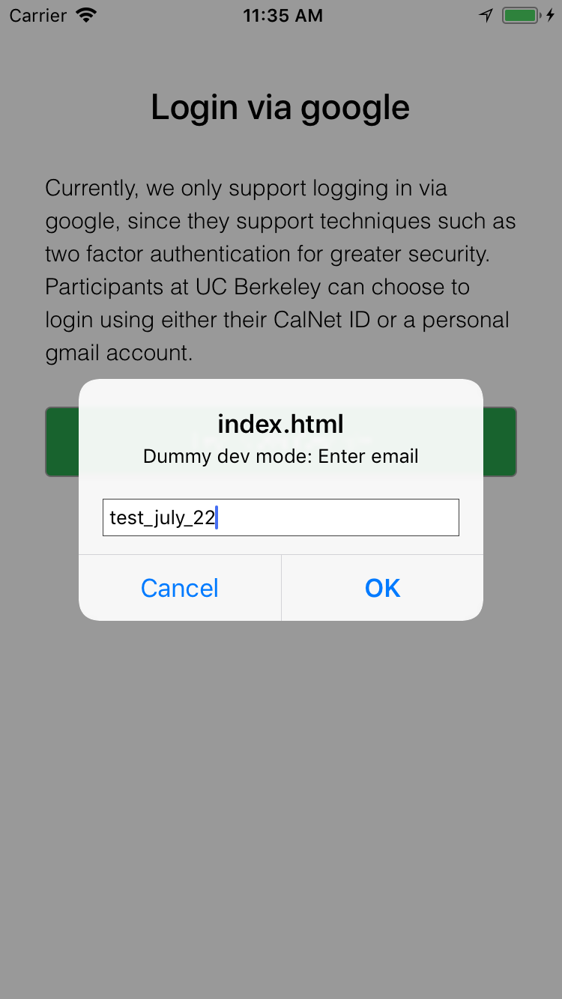
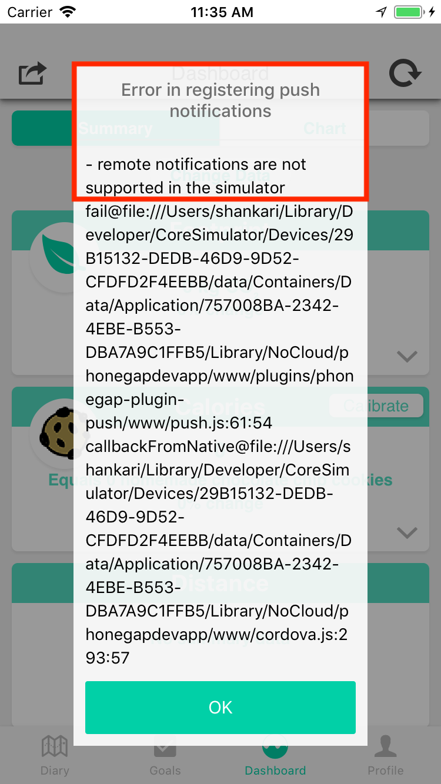
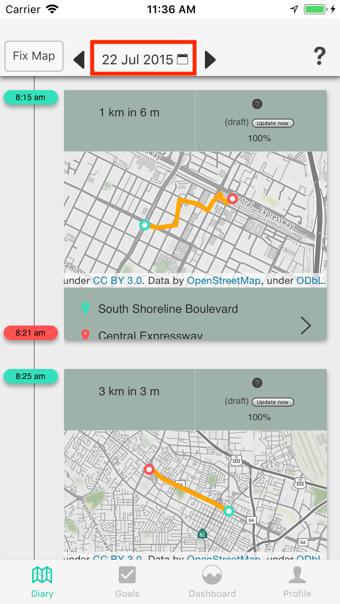

7 steps to an end-to-end development environment for UI-only changes¶
- Install the server, including all dependencies and the e-mission code
- Set up the devapp, by downloading it and installing it in an emulator
- Install the UI, including all dependencies and the e-mission code
- Start the server components, including mongod and the e-mission-server.
-
Load sample data for a test user. At the end of this step, you should be able to see this user in your local database. The server is now able to respond to API requests for this user.
(emission) e-mission-server $ ./e-mission-ipy.bash Python 3.6.1 | packaged by conda-forge | (default, May 11 2017, 18:00:28) Type "copyright", "credits" or "license" for more information. IPython 5.3.0 -- An enhanced Interactive Python. ... In [1]: import emission.core.get_database as edb storage not configured, falling back to sample, default configuration Connecting to database URL localhost In [2]: list(edb.get_uuid_db().find()) Out[2]: [{'_id': ObjectId('5b04d8582e26642a3d58d21e'), 'update_ts': datetime.datetime(2018, 5, 22, 19, 56, 24, 9000), 'user_email': 'test_july_22', 'uuid': UUID('908eb622-be3f-4cf4-bf04-1b7e610bea1c')}] -
Start the UI development server and connect the devapp to it. The devapp will go through the "Downloading" and "Extracting" stages and then load the main e-mission UI.
- Go through the e-mission onboarding process. When prompted for "dummy-dev auth", use
test_july_22.- On android, you should not get any errors during the onboarding.
- On iOS, you should get exactly one error saying that push notifications are not supported in the emulator After the onboarding is complete, you can load data for July 22 2015 from the diary tab.
Success checks¶
| Login screen | Expected error (only on iOS) | Diary for 22 July |
|---|---|---|
 |
 |
 |
Server logs¶
START 2018-05-23 11:35:40.056231 POST /profile/create
END 2018-05-23 11:35:40.115472 POST /profile/create 0.056568145751953125
START 2018-05-23 11:35:40.535397 POST /result/metrics/timestamp
END 2018-05-23 11:35:40.569467 POST /result/metrics/timestamp 908eb622-be3f-4cf4-bf04-1b7e610bea1c 0.03396773338317871
UI logs¶
[phonegap] [console.log] Consented in local storage, no need to show consent
[phonegap] [console.log] DEBUG:changing state to root.main.metrics
[phonegap] [console.log] loading root.main.metrics
[phonegap] [console.log] Sending data {"freq":"D","start_time":1525824000,"end_time":1526947200,"metric":""}
...
[phonegap] [console.log] twoWeeksAgoDuration =
[phonegap] [console.log] twoWeeksAgoMedianSpeed =
[phonegap] [console.log] twoWeeksAgoDistance =
[phonegap] [console.log] Running calorieData with 0 and 0
[phonegap] [console.log] Running calculation with NaN and NaN